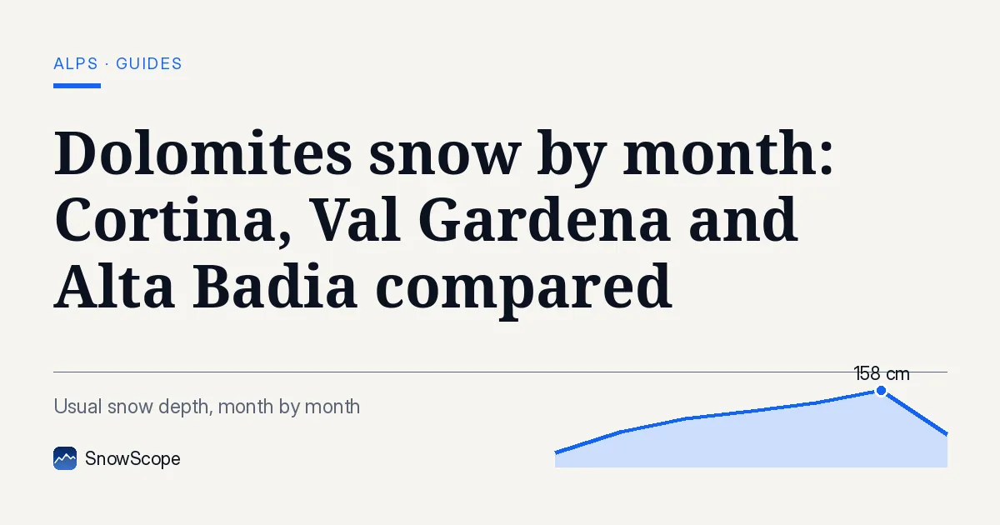

Dolomites snow by month: Cortina, Val Gardena and Alta Badia compared
In the Dolomites, snow depth tells two different stories. The valleys stay dry under the rain shadow, but the high summits build thick cover through winter and spring. We mapped three major resorts—Cortina d'Ampezzo, Val Gardena and Alta Badia—at base, mid-mountain and top across 46 past winters to show when and where the snow actually falls.
See the live snow forecast for Cortina d'Ampezzo in the SnowScope appSnow depth, powder alerts and the 3D map, free.

Why the base stays thin
The three resorts sit in a band of mountains that blocks Atlantic storms. At 859 m, Cortina's base holds a usual winter peak of only 21 cm. Val Gardena (1258 m) reaches 25 cm, and Alta Badia (1341 m) manages 35 cm—the highest of the three because it sits slightly higher. December brings almost none of this: a usual 5 cm at Cortina's base, 2 cm in Val Gardena, 5 cm in Alta Badia.
By February, the base peaks at around 11 cm in Cortina and similar small amounts in the other two. The grooming crews know this pattern well. They use snowmaking to build the famous Sellaronda circuit and the valley pistes, which is why these slopes look perfect all season despite the thin natural cover.
Mid-mountain: where the winter builds
At 1799 m, Cortina's mid-mountain tells a different story. A usual December holds 30 cm, January rises to 47 cm, and February peaks at 53 cm. Val Gardena (1882 m) follows the same rhythm: 25 cm in December, 39 cm in January, 48 cm in February. Alta Badia (1933 m) mirrors them again at 30, 45 and 55 cm. The three areas move as one—when a storm hits the Dolomites, it hits all three.
March stays deep at mid-mountain. Cortina holds 55 cm, Val Gardena 47 cm, and Alta Badia 56 cm. This is why the upper lifts stay interesting through early spring, long after the base has softened.
The summits: where snow stays longest
The real snow lives on top. Cortina's Tofane reaches 2739 m and holds a usual winter peak of 208 cm—more than any other summit in this group. Val Gardena peaks at 165 cm above 2507 m, and Alta Badia at 163 cm above 2526 m. Cortina's extra height gives it the advantage.
March is deepest at all three summits. Cortina holds 132 cm, Val Gardena 107 cm, and Alta Badia 110 cm. April stays thick too: 158 cm at Cortina, 107 cm in Val Gardena, 121 cm in Alta Badia. Snow does not leave these heights until June in a usual winter.
When to expect the best weeks
At Cortina's mid-mountain, ISO week 13 (late March) offers the most reliable depth: a usual 57 cm. Val Gardena and Alta Badia both peak reliably in week 9 (early March) with 51 cm and 56 cm. These weeks mark the last chance for natural snow at mid-altitude before spring warmth begins to work.
At the summits the picture is different. Cortina's top holds good cover throughout weeks 12 to 20 (mid-March to late May), with week 12 bringing a usual 131 cm. This long plateau of deep snow at altitude—when the valleys are slush—is why the cable cars matter most in spring.
The range of winters matters
One winter is not like another. At Cortina's mid-mountain, the poorest past winter saw a peak of 35 cm, while the richest reached 152 cm. The usual sits at 75 cm. At the summit the spread is even wider: from 103 cm in a lean year to 528 cm in a generous one, around a usual 208 cm.
This range tells skiers what to expect. In nine of ten Marchs at Cortina's top, you will find at least 91 cm; in one of ten you might find 198 cm or more. Last winter was relatively modest: Cortina's mid-mountain peaked at 59 cm, well below the long average.
How the Dolomites have changed
Over the 46 winters in our record, the picture has shifted. At Cortina's top, the usual peak fell from 226 cm in the first 15 winters to 172 cm in the last 15. Val Gardena and Alta Badia did better: Val Gardena rose from 165 to 181 cm, and Alta Badia from 168 to 176 cm. The high plateaus of the Sella massif have held their snow better than the exposed ridges of Cortina.
Snow on the ground lasts 194 days at Cortina's mid-mountain in a usual winter, with the first flakes settling by October 6 in half of the winters. This long season is what keeps the upper lifts alive from autumn through late spring.
Tips for skiers
- Plan late February and March for the deepest natural snow at mid-mountain and above. The base runs on made snow; the summits hold genuine powder.
- In December ski the top sectors and the groomed runs. Mid-mountain has just 10 cm of natural cover in a usual December; the cable car is your friend.
- Cortina's Tofane and Lagazuoi summits hold the most snow of the three; Val Gardena and Alta Badia offer easier terrain and better access to the Sellaronda circuit.
- These depths are area values from 46 past winters, not resort measurements. The grooming machines add extra cover, especially on the valley and mid-mountain pistes.
- Check the official avalanche bulletin from AINEVA before skiing off-piste on the high ridges in spring, when the snow load peaks and storms can reset the season quickly.
About these numbers
Resort snow depths are the deepest snow on the resort's upper slopes on the date shown; they are estimates for an area, not a measurement at one point. Forecasts can change. Always read the official avalanche bulletin before going off-piste.
Official avalanche bulletins: AINEVA – Associazione Interregionale Neve e Valanghe
Cite this report
For research, teaching or the press: the numbers and charts are free to reuse under CC BY 4.0 with this citation.
SnowScope (2026), Dolomites snow by month: Cortina, Val Gardena and Alta Badia compared, https://snowscope.app/blog/en/2026/11/dolomites-snow-by-month-cortina-val-gardena-alta-badia-compared.html, accessed 2026-11-24
SnowScope (Atlas Labs). (2026, November 24). Dolomites snow by month: Cortina, Val Gardena and Alta Badia compared. SnowScope snow reports. https://snowscope.app/blog/en/2026/11/dolomites-snow-by-month-cortina-val-gardena-alta-badia-compared.html
BibTeX
@misc{snowscope2026dolomitessnowbymonthcort,
author = {{SnowScope (Atlas Labs)}},
title = {Dolomites snow by month: Cortina, Val Gardena and Alta Badia compared},
year = {2026},
month = nov,
howpublished = {\url{https://snowscope.app/blog/en/2026/11/dolomites-snow-by-month-cortina-val-gardena-alta-badia-compared.html}},
note = {Published 2026-11-24 09:30 UTC; accessed 2026-11-24}
}· CC BY 4.0 · Methods, data and tools →
Cortina d'Ampezzo: snow and temperature by height, this winter vs last (tools) →
Follow Cortina d'Ampezzo
Free: a message when fresh snow is coming, and the forecast every morning.
More snow reports

Twelve famous Alpine resorts ranked by their usual December snow depth at mid-mountain and the top, from 46 past winters, with the poor-December floor for each and the weeks that never fail.

Alpe d'Huez got 106 cm of fresh snow in 72 hours by 23 November. More powder coming, but watch for rain mid-week.

Zugspitze tops the region with 63 cm on 23 November. Nine resorts have snow; 34 cm fell in three days at Nebelhorn.